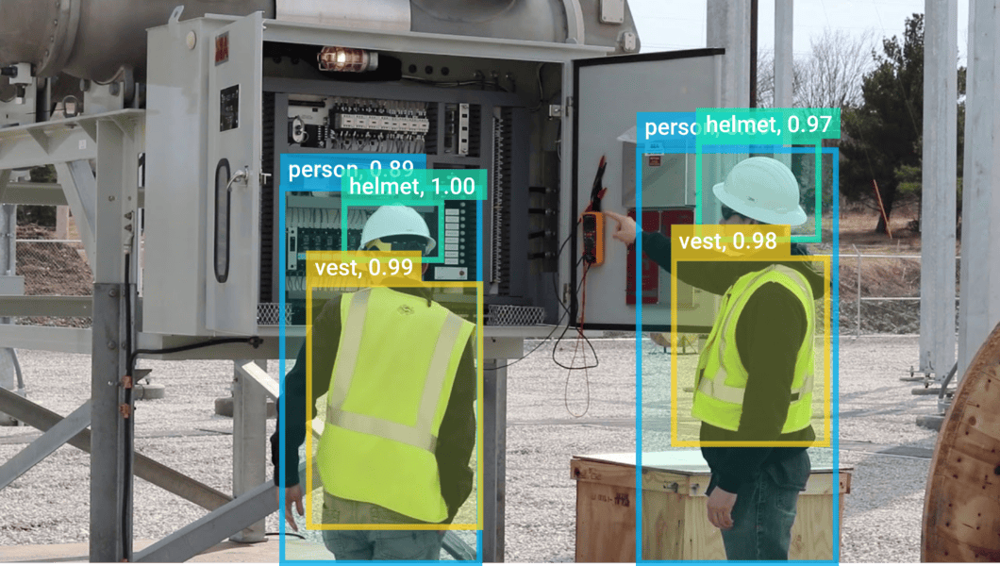

Context
Advertisers and public spaces often need a clearer picture of how their content performs beyond impression counts. This project explored a system for measuring audience flow and engagement by counting people and identifying when they appear to look at or interact with an advertisement.
The problem
Traditional audience metrics can be limited, especially when the goal is to understand real attention rather than just occupancy. The challenge was designing a monitoring system that could infer pass-through behavior, estimate counts, and provide meaningful engagement cues from a practical sensing setup.
What was built
The concept centered on vision-based observation for counting people as they passed through a monitored area and assessing whether they engaged with an advertisement display. By combining detection with attention heuristics, it created a more informative way to understand how people respond to media in public environments.
System thinking
People detection
The vision layer estimates footfall and tracks movement patterns in the monitored zone.
Engagement analysis
Behavior cues and dwell-time indicators help interpret whether a billboard or display captured attention.
Results and lessons
This project demonstrates how perception-based analytics can go beyond simple counting and provide richer decision support for marketing and public-space design. It reflects a broader engineering principle: when sensing systems are designed around human behavior, they can reveal insights that basic occupancy metrics alone cannot capture.
Visual documentation

